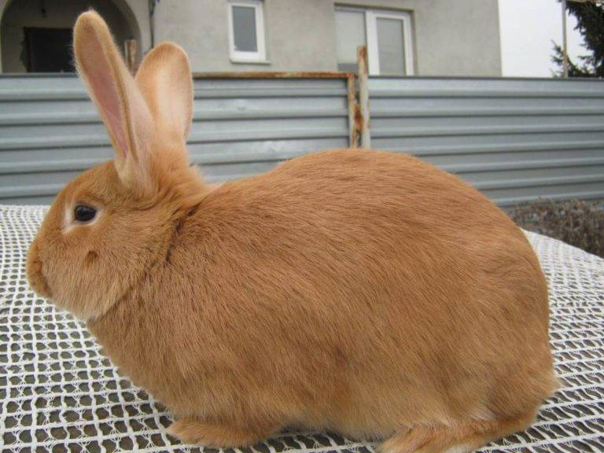
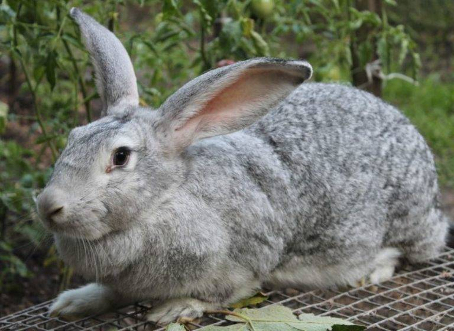
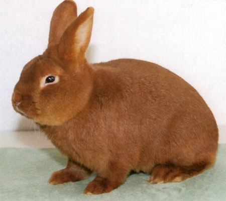
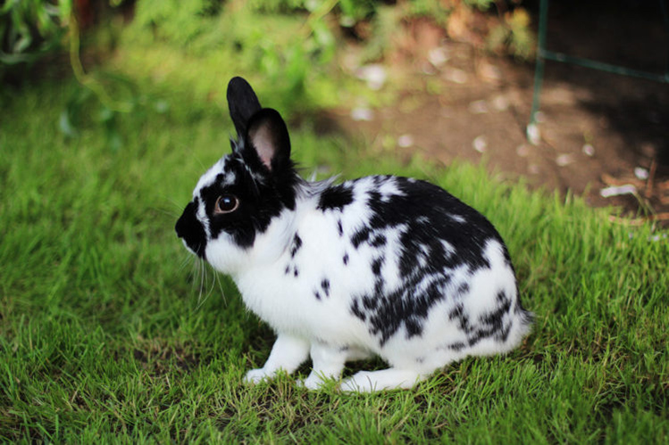
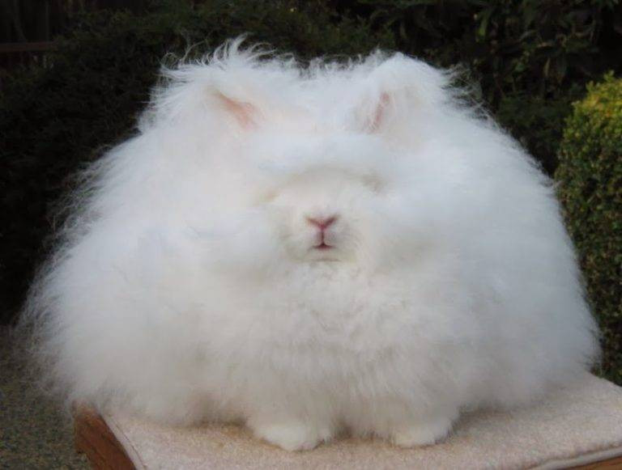
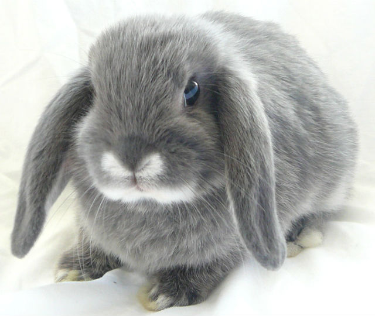
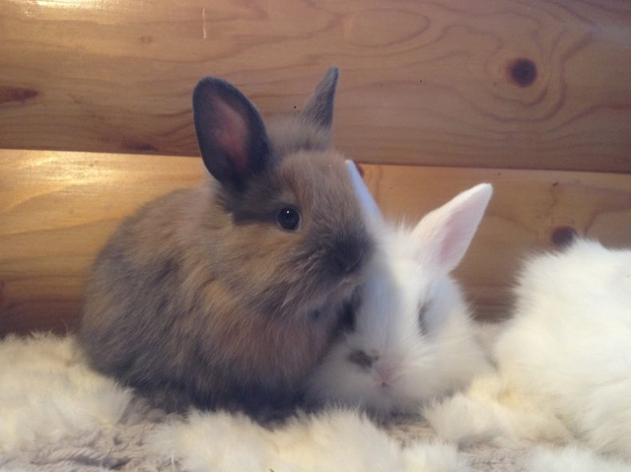

| Название породы | Описание | Фото |
|---|---|---|
| Бургундский кролик | Это порода, выведенная во Франции. Животные обладают слегка вытянутым туловищем с короткой шеей и довольно широкой спиной, грудью и крупом. Кролики бургундской породы очень быстро растут и набирают массу: в возрасте четырех месяцев особь достигает веса 4-4,5 кг. Такая скороспелость породы очень ценится кролиководами, выращивающими кролика на мясо. |  |
| Кролик Серый великан | Порода кроликов, выведенная в СССР в середине 50-х годов. Кролики породы Серый великан обладают очень крепкой конституцией. Длина тела достигает 66-68 см при весе в 5-7,5 кг. Густой и плотный мех может быть окрашен в железисто-серый или серо-золотистый цвет с черными подпалинами. Брюхо обычно светлее спинки. |  |
| Новозеландский кролик | Это американская порода. Животные довольно крупные: при длине тела в 50-55 см вес взрослой особи достигает 5 кг. Мощная конституция кроликов новозеландской породы позволяет выращивать их для мясного производства, а выделанные шкурки с густым мехом пользуются спросом при пошиве меховых изделий. По окрасу новозеландского кролика делят на чисто-белую и красную масть. |  |
| Кролик Бабочка | Порода, пришедшая из Англии. Особи имеют интересную окраску, выражающуюся в симметрично расположенных пятнах черного, серого или коричневого оттенка на общем белом фоне шкурки. Тело животного отличается мощностью, при длине туловища в 55-60 см взрослая особь весит 4,5-4,8 кг. Кролики породы Бабочка используются для выращивания на мясо и ради получения красивой шкурки. |  |
| Ангорский пуховый кролик | Порода выведена в Турции почти три столетия назад. Представители породы по окрасу бывают чисто белыми, голубовато-серыми, черными, палевыми, коричневыми и другими. Ангорский кролик не может похвастаться большими размерами: при длине тела в 44-47 см он редко весит более 3 кг. Ангорская пуховая порода кроликов имеет отличительную черту во внешнем виде: кисточки на ушах. Шелковистый пух кролика достигает длины 23 см, за год со зверька можно собрать до 1,5 кг пуха. |  |
| Карликовый вислоухий баран | Порода, выведенная в Голландии. Кролик имеет туловище цилиндрической формы и массивную голову с достаточно широким лбом. Отличительная особенность всех особей – свисающие уши, длина которых достигает 25-28 см. Вес декоративного кролика варьируется в пределах 1,5-2 кг. Мех мягкий и шелковистый, самого разного окраса, может быть и длинным, и коротким. |  |
| Львиноголовый кролик | Порода декоративных кроликов, выведенная в Бельгии. Голова этих животных, покрытая длинной шерстью, напоминает голову льва. Также длинный мех покрывает задние лапки животного. Средний вес зверька составляет 1,7 кг. Тело кролика коренастое, ушки короткие и торчащие. Цвет меха может быть любым, а среди основных окрасов выделяются черный, мардер, агути, белый красноглазый, сиам, фавн, тюрингенский и оранжевый. Эти декоративные кролики очень просты в содержании, они чистоплотны и легко обучаемы. |  |